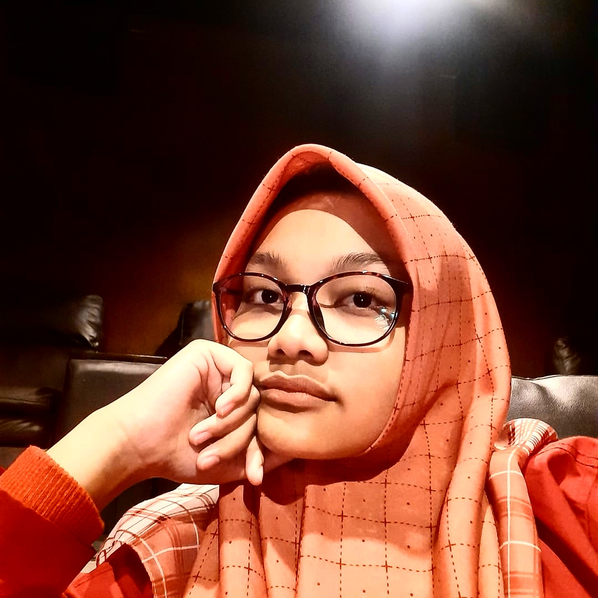

I am an enthusiastic Information Technology student, dedicated to expanding my knowledge and skills in various programming languages, including Java, HTML, and CSS. As I navigate through my academic journey, I find immense joy in exploring the intricacies of these languages and understanding their applications in the vast landscape of information technology. My coursework and hands-on experiences have allowed me to develop a solid foundation in programming principles and web development.
Hello, I am Kayla Rachmaudina Satiti Putri
Undergraduate student in State Polytechnic of Malang, Information Technology - Business Information System

About me
I am an enthusiastic Information Technology student, dedicated to expanding my knowledge and skills in various programming languages, including Java, HTML, and CSS. As I navigate through my academic journey, I find immense joy in exploring the intricacies of these languages and understanding their applications in the vast landscape of information technology. My coursework and hands-on experiences have allowed me to develop a solid foundation in programming principles and web development.
I am an enthusiastic Information Technology student, dedicated to expanding my knowledge and skills in various programming languages, including Java, HTML, and CSS. As I navigate through my academic journey, I find immense joy in exploring the intricacies of these languages and understanding their applications in the vast landscape of information technology. My coursework and hands-on experiences have allowed me to develop a solid foundation in programming principles and web development.
-
SMA AL-MAAHIRA IIBS MALANG
Mathematics & Natural Sciences (2020 - 2023) -
STATE OF POLYTECHNIC MALANG
Information Technology - Business Information System (2023 - Present)
-
Programming Language
Java -
Web Development
HTML, CSS -
Language
Indonesia, English (fluent) -
Teamwork Skills
Task management and assignment -
Problem Solving
Analysis Problem, effective problem solving -
Additional Skills
Strong team and collaboration skills
Contact Me
-
WhatsApp
-
Instagram
-
Linkedin
-
Github